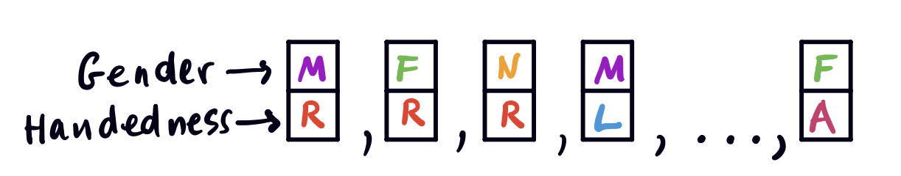
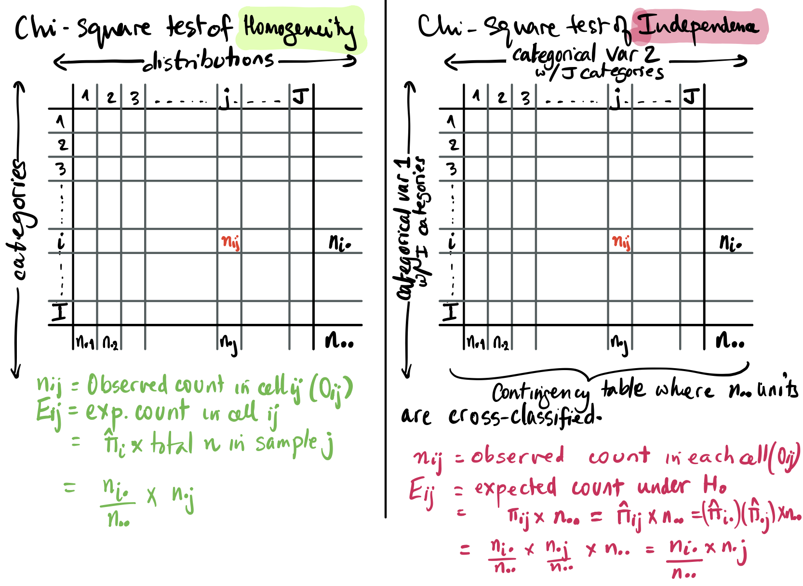
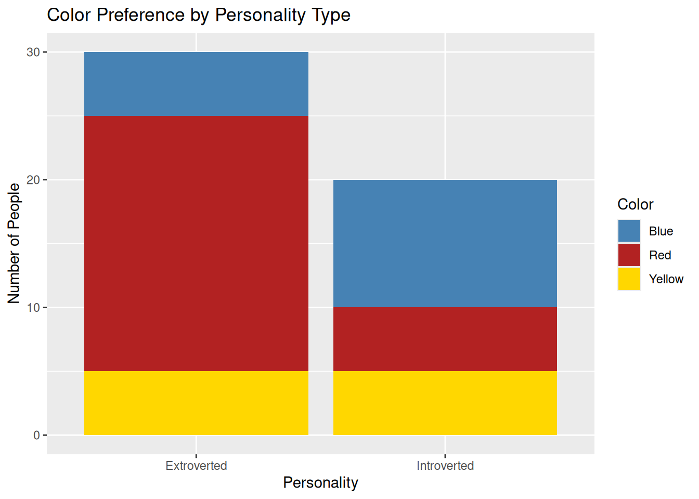
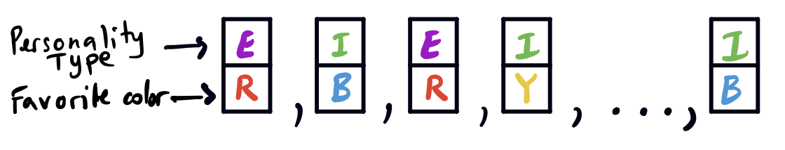
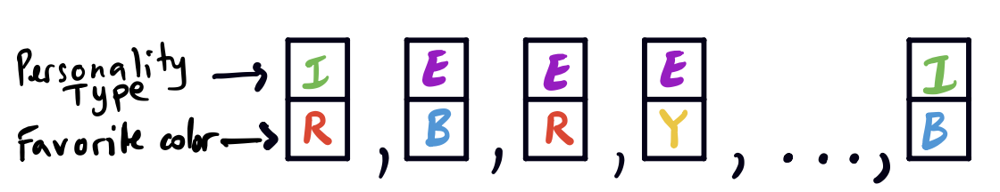
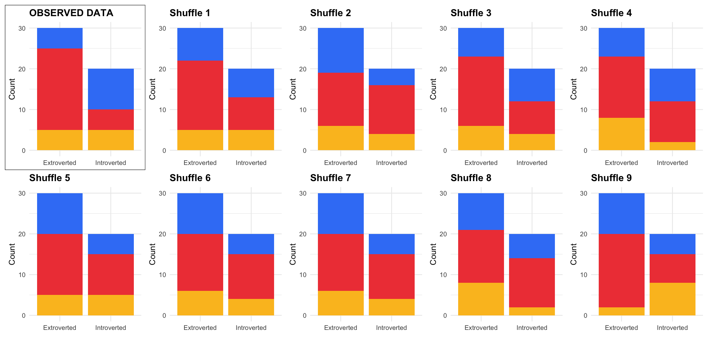

Before we go any further, let’s stop and see where we are. We are studying methods of analyzing categorical data, and hypothesis tests involving multinomial random variables. So far, we have seen an exact test of association that we use when we have small samples of binary data. We have also seen a test that we can use to see if several multinomial samples have the same underlying probabilities. In this chapter, we will look at a chi-square test of independence that we can use when we have two categorical variables with perhaps more than two categories each. We will also look at the permutation test of independence, which is a non-parametric test that we can use especially when we have small samples and the distributional assumptions may not be valid.
Overview of the methods so far, and what’s next:
☑Fisher’s Exact Test: Used to test association of two categorical variables in a \(2 \times 2\) table. If there is no association, then we can use the hypergeometric distribution to check probabilities. (Distribution of \(N_{11}\) is hypergeometric.)
☑Chi-square test of Homogeneity: One categorical variable, and multiple independent samples: Are the underlying distributions the same? That is, are the cell probabilities the same across the distributions?
☐Chi-square test for Independence: Two categorical variables, and one sample (cross-classified according to both variables). Are the variables independent in the population?
For example: are gender and GPA independent? What about ethnicity and GPA?
☐Permutation tests for independence
☐Matched-Pairs design: Two paired samples (say: the same individuals before and after a treatment). Are the distributions the same? (This is the topic of the next chapter.)
Chi-Square Test for Independence
This test looks very similar to the test for homogeneity. In fact, the test statistic is the same, and the expected counts end up with the same expression as in the test for homogeneity (row-sum \(\times\) column-sum \(\div\) the grand total), but the way we arrive at that expression is quite different! For the test of homogeneity, we had \(J\)independent samples from \(J\) multinomial distributions each with \(I\) categories, and we hypothesized that the distributions in fact, had the same underlying probabilities - that is, we just have one multinomial distribution, and \(J\) independent samples from this distribution. We then computed the expected counts by using the MLE’s of these identical probabilities under the null hypothesis of them being the same.
Now we have one sample of size \(n\equiv n_{..}\) that is cross-classified according to two variables, the first with \(I\) categories, and the second with \(J\) categories. The question we are asking is one of association, not homogeneity, and we ask if the two variables are independent or does it seem that they are associated. As earlier, the table will have \(I\) rows and \(J\) columns and it is now a contingency table. Questions about whether two categorical variables are associated are ubiquitous. For example: Does handedness depend on gender; or are marital status and education level associated? Does your personality type have any relationship with the colors you favor? (Note that we do not make causal inferences, so we would not say that your personality type influences your choice of color, merely that they might be related.)
Even though gender is understood as along a continuum, say we consider it to have four categories: female (F), male (M), nonbinary (N), and other (O). Similarly, handedness is also along a continuum, but let’s divide it into three categories: dominant left-handed (L), dominant right-handed (R), and ambidextrous (A). Then we can consider representing each of us as a ticket with two labels on it:

Each population unit is a ticket
Each unit is cross-classified, and represented by a ticket. For example, I identify as female and I am right-handed.
Notation and Probability Model
We let \(\pi_{ij}\) be the probability of a unit being in cell \((i, j)\): that is, having attribute \(i\) from the row variable and attribute \(j\) from the column variable.
\(\pi_{i\cdot}\) is the marginal probability for the \(i\)th row.
\(\pi_{\cdot j}\) is the marginal probability for the \(j\)th column.
The contingency table has the following structure:
\(1\)
\(2\)
\(\cdots\)
\(\mathbf{j}\)
\(\cdots\)
\(J\)
Total
\(1\)
\(2\)
\(\vdots\)
\(\vdots\)
\(\mathbf{i}\)
\(\cdots\)
\(\mathbf{n_{ij}}\)
\(\cdots\)
\(\mathbf{n_{i\cdot}}\)
\(\vdots\)
\(\vdots\)
\(I\)
Total
\(\mathbf{n_{\cdot j}}\)
\(\mathbf{n_{\cdot\cdot}}\)
Our null hypothesis and alternative hypothesis are: \[
H_0: \text{ The row and column variables are independent }
\]\[
H_1: \text{ The two variables are not independent }
\]
Under the null hypothesis of independence, the joint probability of being in the \((i,j)\)th cell must be the product of the marginal probabilities for each of the variables, of being in the \(i\)th row and the \(j\)th column:
\[
\pi_{ij} = (\pi_{i\cdot})(\pi_{\cdot j})
\]
We can now write our null and alternative hypotheses as:
\[
H_1: \pi_{ij} \text{ are free (not constrained to be independent)}
\]
Now, we need to find the MLE under the null and compare expected counts \(E_{ij}\) for each cell (computed using the null MLE) to the observed counts \(O_{ij}\). This is essentially a goodness-of-fit test using the probability model specified by the null.
MLEs and Expected Counts
We know the maximum likelihood estimates for a multinomial distribution:
MLE for the row multinomial: \(\displaystyle\hat{\pi}_{i\cdot} = \frac{n_{i\cdot}}{n_{\cdot\cdot}}\)
MLE for the column multinomial: \(\displaystyle\hat{\pi}_{\cdot j} = \frac{n_{\cdot j}}{n_{\cdot\cdot}}\)
Under \(H_0\), using the assumption that the joint probability is the product of the marginals, we get: \[
\hat{\pi}_{ij} = \hat{\pi}_{i\cdot} \times \hat{\pi}_{\cdot j} = \left(\frac{n_{i\cdot}}{n_{\cdot\cdot}}\right)\left(\frac{n_{\cdot j}}{n_{\cdot\cdot}}\right)
\]
Therefore, the expected count in cell \((i,j)\) is: \[
E_{ij} = \hat{\pi}_{ij} \cdot n_{\cdot\cdot} = \frac{n_{i\cdot} \times n_{\cdot j}}{n_{\cdot\cdot}}
\]
Note
Notice that the \(E_{ij}\) is computed exactly the same way as in the test for homogeneity, but arrived at quite differently.
Test Statistic and Degrees of Freedom
** The test statistic \(X^2\)**: Since this is essentially a goodness-of-fit test, we will use Pearson’s chi-square statistic: \[
X^2 = \sum_{i=1}^{I}\sum_{j=1}^{J} \frac{(O_{ij} - E_{ij})^2}{E_{ij}} = \sum_{i=1}^{I}\sum_{j=1}^{J} \frac{(n_{ij} - n_{\cdot j}\,n_{i\cdot}/n_{\cdot\cdot})^2}{n_{\cdot j}\,n_{i\cdot}/n_{\cdot\cdot}}
\]
This is exactly the same test statistic as the test of homogeneity!
Degrees of freedom: Under \(\omega_0\), the marginals are estimated by the data, so we estimate \((I-1)\) and \((J-1)\) parameters (for the row and column variables). Under \(\Omega\), we have \(IJ\) parameters of which only 1 is constrained (they must sum to 1). Therefore we compute the degrees of freedom (df) as follows: \[
\begin{align*}
\text{df} = \dim\Omega - \dim\omega_0 &= (IJ - 1) - \big[(I-1) + (J-1)\big] \\
&= IJ - 1 -I +1 -J + 1 \\
&= I(J-1) - 1(J-1)\\
&= (I-1)(J-1)
\end{align*}
\]
Summarizing the steps of the test of independence:
We use Pearson’s chi-square statistic \(X^2\), with observed value \(x^2\).
Under the null hypothesis of independence, \(X^2 \sim \chi^2_{(I-1)(J-1)}\)
The \(p\)-value is given by \(P(X^2 > x^2 \mid X^2 \sim \chi^2_{(I-1)(J-1)})\). Note that large values suggest a deviation from what is expected, so this is also a one-sided test, that is, we reject for large values of the statistic.
Compared to the test of homogeneity, the test statistic looks the same, but the hypotheses and sampling assumptions differ:
Homogeneity: row margins are fixed (multiple samples).
Independence: only the grand total \(n_{\cdot\cdot}\) is fixed (one cross-classified sample).
Note that we can think about independence as homogeneity of conditional distributions: if \(X\) and \(Y\) are independent, then \(P(Y \mid X = x_1) = P(Y \mid X = x_2)\). For example, if education and marital status are independent: \[P(\text{married once} \mid \text{college}) = P(\text{married once} \mid \text{no college})\]
Comparing the two chi-square tests:

Chi-square tests of homogeneity and independence tables
Chi-Square Test of Homogeneity
Chi-Square Test of Independence
Structure
\(J\) independent multinomial samples
Contingency table where \(n_{\cdot\cdot}\) units are cross-classified according to two variables
Rows
\(I\) categories
Categorical variable 1 with \(I\) categories
Columns
\(J\) distributions
Categorical variable 2 with \(J\) categories
\(n_{ij}\)
Observed count in cell \(ij\)\((O_{ij})\)
Observed count in cell \(ij\)\((O_{ij})\)
\(E_{ij}\)
\(\hat{\pi}_i \times\) total \(n\) in sample \(j\)\(= \dfrac{n_{i\cdot}}{n_{\cdot\cdot}} \times n_{\cdot j}\)
This example is from the text by Rice, and can be found on page 521. The expected values are computed as above, and listed in the parentheses.
Married Once
Married More Than Once
Total
College
550 (523.8)
61 (87.2)
611
No College
681 (707.2)
144 (117.8)
825
Total
1231
205
1436
Computing the expected counts \(E_{ij}\):
For example, \[
E_{11} = \hat{\pi}_{1\cdot} \times \hat{\pi}_{\cdot 1} \times n_{\cdot\cdot} = \frac{611}{1436} \times \frac{1231}{1436} \times 1436 \approx 523.8
\]
We get that: \[
X^2 = \sum_{i=1}^{I}\sum_{j=1}^{J} \frac{(O_{ij} - E_{ij})^2}{E_{ij}} = 16.1
\] The degrees of freedom are given by \(\dim \Omega - \dim \omega_0 = (2\times 2 -1) - [2-1 + 2-1] = 3-2 = 1\), which is the same as \((2-1)(2-1)\), of course.
\[
X^2 \sim \chi^2_1 \implies \text{p-value} \approx 0 \implies \textbf{Reject } H_0
\] Thus we reject the null of no association, and conclude that there appears to be some relationship between education level of individuals and the number of they are married.
Are Personality and Favorite Color Related?
A psychologist wants to test whether there is a relationship between personality and color preference. They recruit a random sample of respondents. Each respondent identifies their favorite color (blue, red, or yellow). Each respondent also takes a personality test that classifies them as either extroverted or introverted.
Data (\(I \times J = 2 \times 3\) contingency table):
Blue
Red
Yellow
Total
Extroverted
5 (9)
20 (15)
5 (6)
30
Introverted
10 (6)
5 (10)
5 (4)
20
Total
15
25
10
50
Values in parentheses are expected counts \(E_{ij}\).
Note that in the Austen books example, each of the \(J\) books was its own multinomial sample with \(I\) categories. Here we sample 50 people independently, so we have a single multinomial sample with \(I \times J = 2 \times 3\) categories.
\(H_0\): There is no association between personality type and favorite color. (\(\text{df} = (2-1)(3-1) = 2\))
Conclusion: Reject \(H_0\). Personality type and favorite color appear to be associated.
Chi-Square Test for Independence in R
Let’s first visualize the data with a stacked bar chart:
Code
data <-matrix(c(5, 20, 5, 10, 5, 5), ncol =3, byrow =TRUE)colnames(data) <-c("Blue", "Red", "Yellow")rownames(data) <-c("Extroverted", "Introverted")df <-as.data.frame(data) |>mutate(Personality =rownames(data)) |>pivot_longer(cols =c(Blue, Red, Yellow), names_to ="Color", values_to ="Count")ggplot(df, aes(x = Personality, y = Count, fill = Color)) +geom_bar(stat ="identity", position ="stack") +scale_fill_manual(values =c("Blue"="steelblue", "Red"="firebrick", "Yellow"="gold")) +labs(title ="Color Preference by Personality Type", x ="Personality", y ="Number of People")

We see that the two bars seem quite different! To perform the test, we would use the function chisq.test() as shown below. We would first need to create a data matrix to input into the function, that represents the contingency table.
Note that you cannot pass the two numeric vectors of counts into the function chisq.test(), as that will give you an error. If you pass vectors, they should be raw data with vectors of the category labels with one entry per person. For example:
We could also, especially if our expected counts are too small for the chi-square approximation (say, less than 5), we could use the permutation test for independence, which is a non-parametric alternative that makes no distributional assumptions. Our null and alternative hypotheses are the same:
\(H_0\): The two variables are independent, and differences are explained by chance variation, and the alternative \(H_1\) is that the variables are dependent.
For example, let us imagine again that each person is represented by a ticket with 2 labels for personality type, and favorite color:

Personality type and color
The idea is that if it is true that there is no association, then we should be able to shuffle the values of one of our variables (shuffle one of the labels), and it should not change our test statistic much.

We can do this shuffle over and over again, and build a distribution of the test statistic we are interested in. For this example, we will compute Pearson’s chi-square statistic each time, and get a distribution for the values, and then see where our observed chi-square statistic falls within this distribution. Here are the steps of the permutation test:
Procedure
Create a dataset with two columns (one per variable).
Under \(H_0\), permute (shuffle) one column to break any relationship. Any such permutation is equally likely.
Compute the test statistic (e.g., \(X^2\)) on the permuted dataset.
Repeat \(B\) times to build the permutation distribution under \(H_0\).
Compare the observed test statistic to this distribution to obtain a \(p\)-value.
For example, we could look at it visually with 9 shuffles. It is a bit hard to see with just 9, but even then you can see that our observed data doesn’t seem quite in sync with the other values, and seems to be an outlier.

Bar graphs of permuted data
There is a package in R we could use, called infer which is written to be part of the tidy ecosystem. It shows very clearly how you do each step of the algorithm above, and then you can use it to visualize the distribution, showing where the observed statistic falls, and also compute the \(p\)-value.
Using the infer Package
library(infer)raw_data <-data.frame(Personality =c(rep("Extroverted", 30), rep("Introverted", 20)),Color =c(rep("Blue", 5), rep("Red", 20), rep("Yellow", 5), # Extrovertsrep("Blue", 10), rep("Red", 5), rep("Yellow", 5) # Introverts ))# First compute the observed test statisticobs_stat <- raw_data |>specify(Color ~ Personality) |>calculate(stat ="Chisq", correct =FALSE)# Permutation null distributionnull_distribution <- raw_data |>specify(Color ~ Personality) |># 1. State your variableshypothesize(null ="independence") |># 2. Assume no relationshipgenerate(reps =1000, type ="permute") |># 3. Shuffle labels 1,000 timescalculate(stat ="Chisq", correct =FALSE)# Visualize and compute p-valuevisualize(null_distribution) +shade_p_value(obs_stat, direction ="greater")p_value <- null_distribution |>get_p_value(obs_stat, direction ="greater")
p_value <- null_distribution |>get_p_value(obs_stat, direction ="greater")
Results from infer: p-value \(= 0.016\)
The simulation-based null distribution (histogram) shows the observed \(X^2 = 9.03\) (red line) falls in the right tail, confirming a small p-value.
Note that we can also use chisq.test() to do a permutation test, by setting simulate.p.value = TRUE. This does the test slightly differently but should give you a similar result. It fixes the margins according to the table you input, and then generates \(B\) tables compatible with those margin values. It builds a distribution for the chi-square statistic by computing the chi-square statistic for each of those tables.
Using Base R (Direct Permutation)
data <-matrix(c(5, 20, 5, 10, 5, 5), nrow =2, byrow =TRUE)# Permutation test with 10,000 replicateschisq.test(data, simulate.p.value =TRUE, B =10000)
This gives us the following results:
#> Pearson's Chi-squared test with simulated p-value (based on 10000 replicates)#> X-squared = 9.0278, df = NA, p-value = 0.0139